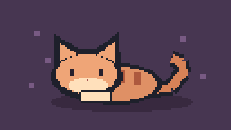

Personal Projects · Interactive demos
Small problems.
Visible solutions.
Explore algorithms, solve a Sudoku, browse cat GIFs, or try a live conversation between two accounts.
Graph search
Maze & Pathfinding
Compare breadth-first search with A* on the same grid. Both find a shortest route; A* uses distance to the finish to guide its search.
Load a preset or edit the grid to begin.
Backtracking
N-Queens
Place one queen in every row without sharing a column or diagonal. Watch the solver undo placements when a choice leads to a dead end.
Choose a board size and start the solver.
Concurrency concept
One slot.
Two requests.
Two customers want the same 10:00 slot. Change their arrival delays and see which request claims it first.
This is an in-memory browser simulation. JavaScript processes each claim sequentially. A production Go API needs a database transaction and a unique constraint on the resource and fixed time slot to enforce this across API instances. Nothing here creates a real booking.
Constraint solving
Sudoku Solver
Edit the clues, then let the Go backend solve the puzzle. Empty cells represent unknown digits.
Just for fun
Cat GIFs
A fresh GIF from CATAAS, fetched through the Go API. Animation starts only when you ask for it.

Ready to load a cat GIF.
Real-time messaging
Two accounts.
One conversation.
Try both sides of a live conversation. Each pane has a separate account session connected to the Go backend over WebSockets.
These are pre-registered demo identities in a room isolated to this browser. History survives refreshes and server restarts, and expires after 24 inactive hours. Use demo messages only.
Demo A
Your conversations
Conversations
Demo B
UnknownDemo B
Your conversations